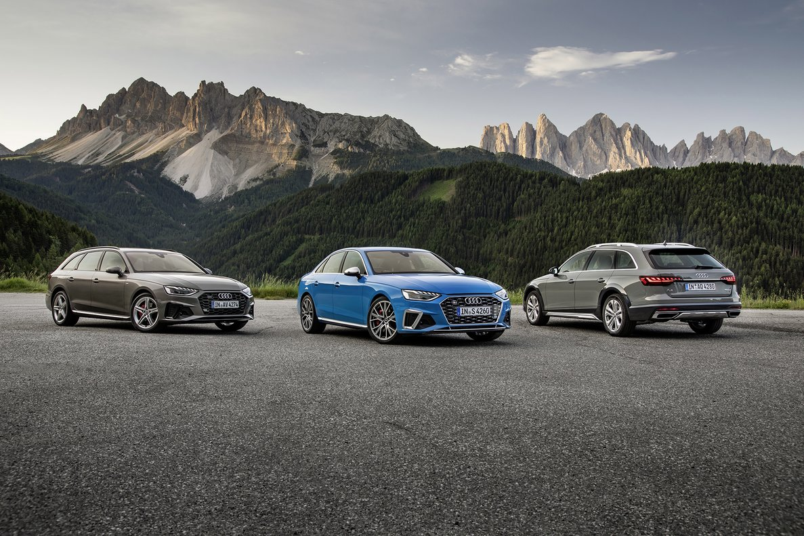
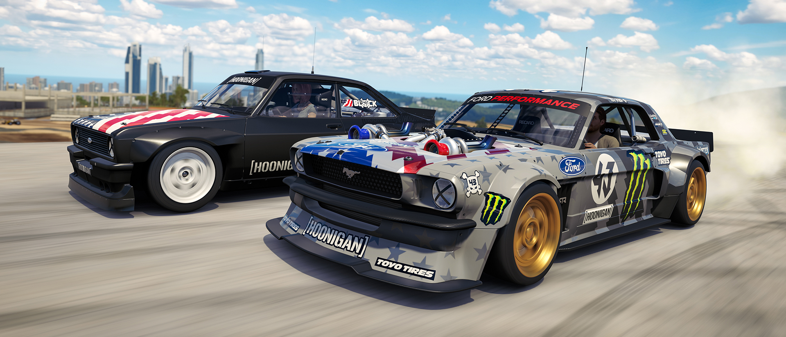
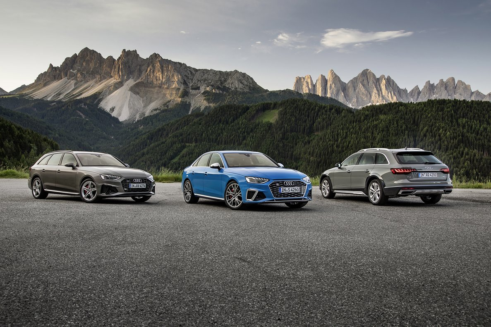
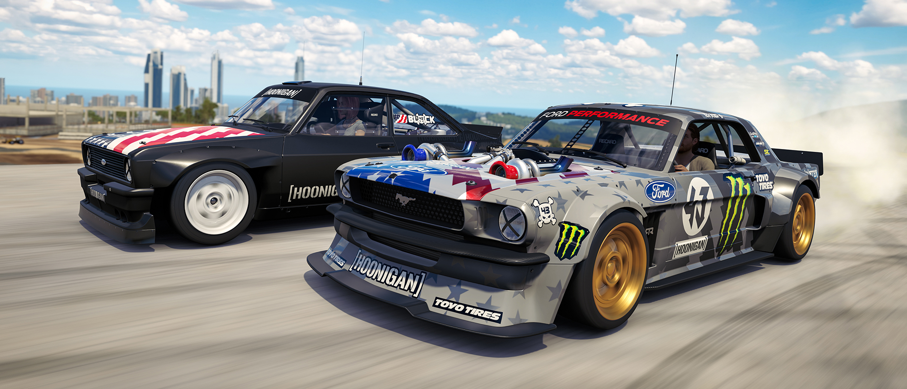

Aún se desconoce que papel tendrá Hoonigan en el videojuego, más allá de la inclusión del Hoonigan Car Pack, el mismo que en Forza 3. Sin embargo, Block ya ha colaborado con el juego en su nuevo tráiler, donde aparece jugando al juego de la silla pero con coches para terminar con imágenes extraídas del mismo motor del juego. De momento, sí se sabe que los que reserven el videojuego de forma digital conseguirán el Hoonigan Car Pack de manera gratuita para ambos juegos.
Ken Block es uno de los pilotos más conocidos del mundo. El norteamericano, que ha finalizado octavo en el Mundial de la FIA de Rallycross, es famoso en el mundo por ser habitual en youtube protagonizando vídeos espectaculares y por sus Gymkhanas, otro tipo de vídeos haciendo varias barbaridades con c oches en lugares como polígonos industriales o carreteras cerradas en medio de una ciudad. Hace un tiempo, Microsoft y Hoonigan, el equipo deportivo c reado por el mismo Block, firmaron un acuerdo de colaboración y, ahora, el piloto y su equipo se convierten en protagonistas de Forza Motorsport 7 y Forza 3 Horizon.
Durante los últimos meses, se ha visto la colaboración entre ambas partes apareciendo, por ejemplo, la publicidad de Forza 3 Horizon en los vídeos del piloto estadounidense. Es por eso que en el mencionado Forza 3 Horizon, que lleva en activo desde 2016 y en el cual se pone a disposición de los jugadores nuevos coches mensualmente para descargar, el pasado 15 de agosto se puso a la venta un pack de coches del equipo Hoonigan para su descarga.
El tres de octubre llega a las estanterías de las tiendas de videojuegos uno de los títulos más esperados del año, Forza Motorsport 7. Este juego se caracteriza por ofrecer una de las mejores experiencias de conducción en consolas y llegará con más de 700 coches disponibles de 90 marcas distintas, muchos de los cuales estarán recreados con una precisión milimétrica en cada uno de sus detalles. Con una resolución de 4K y 60 frames por segundo en Xbox One promete ser uno de los juegos más birllantes del género.
Aún se desconoce que papel tendrá Hoonigan en el videojuego, más allá de la inclusión del Hoonigan Car Pack, el mismo que en Forza 3. Sin embargo, Block ya ha colaborado con el juego en su nuevo tráiler, donde aparece jugando al juego de la silla pero con coches para terminar con imágenes extraídas del mismo motor del juego. De momento, sí se sabe que los que reserven el videojuego de forma digital conseguirán el Hoonigan Car Pack de manera gratuita para ambos juegos.
 



Junto a Ken Block y Hoonigan, y como publicó Motor Zeta, Forza Motorsport 7 también cuenta con el patrocinio de Porsche. Turn 10 Studios, el equipo que desarrolla el juego, y Microsoft anunciaron durante el E3, la muestra más grande del mundo de videojuegos, el acuerdo y presentaron, junto con el juego, el nuevo Porsche 911 GT2 RS, que será imagen de portada del mismo y, a la vez, el 911 más potente de la historia con un motor que rondará los 650 CV y los 750 Nm de
Con ello, Forza se está rodeando de los mejores para dar notoriedad a un videojuego que no necesita presentación y que, entre otras opciones, dejará probar el nuevo 911 GT2 RS antes de que el propio coche real se ponga a la venta.